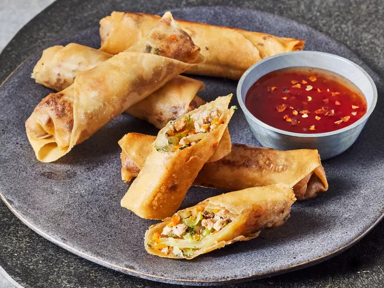

← Back to Recipe List
Traditional Lumpia

Today, we're learning about HTML (How To Make Lumpia)
Lumpia are fried spring rolls that are found in Filipino and Indonesian cuisines. The rolls
traditionally wrapped and rolled individually in thin flour sheets known as lumpia wrappers. These
are often stuffed with a savory mixture of ground pork and vegetables. Each piece of lumpia is deep
fried until golden brown. This makes it crunchy and more enjoyable to eat. It is served with either
sweet and sour sauce or with banana ketchup.
Lumpia is a popular dish in the Philippines. It is served during special occasions. Christmas dinner
won't be complete without this on the table. It is also a popular part of the menu during town fiestas,
birthday parties, weddings, and Christmas.
Ingredients
Servings: Good for 6 people
- 50 pieces lumpia wrapper
- 3 cups cooking oil
- 1 1/2 lbs ground pork
- 2 pieces onion, minced
- 2 pieces carrots, minced
- 1 1/2 teaspoons garlic powder
- 1/2 teaspoon ground black pepper
- 1/2 cup parsley, chopped
- 1 1/2 teaspoons salt
- 1 tablespoon sesame oil
- 2 eggs
How to Cook
-
Combine ground pork, minced onion, minced carrots, garlic powder, pepper, chopped parsley,
salt, sesame oil, and eggs in a bowl. Mix well using your hands. Make sure to wash before
doing this step or wear gloves that are latex and BPA free.
-
Lay a piece of lumpia wrapper flat on a plate. Scoop around 1 to 1 1/2 tablespoons of filling
and place it at one of the left side of the wrapper. Spread the filling and then fold both sides
of the wrapper. Fold the top and bottom ends inwardand then roll the wrapper until the mixture
is completely wrapped.
-
Seal by rubbing water using your fingers on the right end of the wrapper and press it gently
against the rolled lumpia. Perform this step with the remaining ingredients.
- Heat the oil in a small pot.
-
Deep fry the lumpia in batches of 4 to 6 pieces in medium heat for 10 minutes or until the wrapper
turns light to golden brown.
- Remove the fried lumpia from the pot. Let the oil drip.
- Serve with banana ketchup or sweet and sour sauce.
- Share and enjoy!
Back to the top